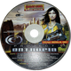

Entropia ArchivePE Classic is a modern recreation of Project Entropia as it was around 2004, built with Unity Engine. It requires the original game's content files. While striving to be faithful to the original, PE Classic includes quality of life deviations, such as widescreen support.


NOTE: please contact thecarow@gmail.com if you wish to participate in testing.
PE Classic 0.8.3 + data
(Windows)
Ready to play: the game with the VU 5.4 client's Data folder already in place.
PE Classic 0.8.3
(Windows)
The game alone. It needs the Data folder of a VU 5.4 client: put that folder beside PE Classic.exe.
Features
| Avatar creation | ✓ |
| Eudoria continent | ✓ |
| Inventory | ✓ |
| Items: Weapons, weapon attachments, armor, healing items, clothing, and others | ✓ |
| Creatures and loot | ✓ |
| Mining | ✓ |
| Sweat gathering | ✓ |
| Oil rig | ✓ |
| PVP Zones | ✓ |
| Terminals: Repair, trade, storage and revival terminals | ✓ |
| Ghost form during death | ✓ |
| Auction house with auto stock keeping | ✓ |
| Skills that rise with use | ✓ |
| Social: chat, private chat, friends, teams, player trade and emotes | ✓ |
| Manufacturing: clothing, armor, weapons and weapon attachments | ✓ |
| Modern features: widescreen, MSAA, font smoothing and other QoL additions | ✓ |
| Colouring | ✓ |
| Settlements | Partial |
| Mindforce chips | Partial |
| Estates | ✗ |
| Societies | ✗ |
| Professions | Partial |
| Scanning | ✗ |